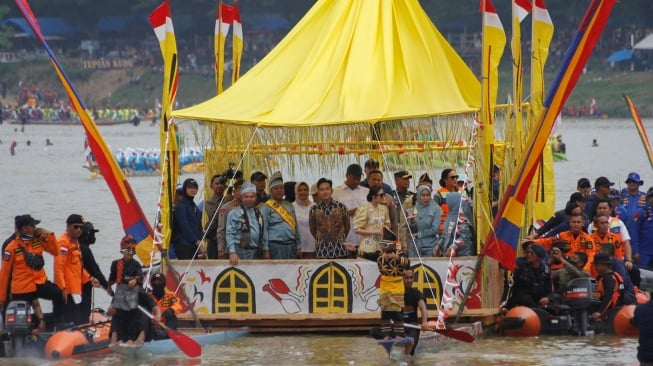

Galeri Foto
"Mengabadikan Momen Kemeriahan Budaya Kuantan Singingi"
Dokumentasi Kegiatan
Aksi pendayung di Sungai Kuantan

Wakill Presiden Gibran Rakabuming Raka(tengah) bersama pejabat lainnya berdiri diatas perahu hias saat menghadiri pembukaan festival Pacu Jalur 2025 di Kuantan Singingi, Kabupaten Singingi, Riau, Rabu(20/08/2025)
Ingin menyumbang foto kegiatan?
Kirimkan dokumentasi terbaikmu melalui menu Kontak.